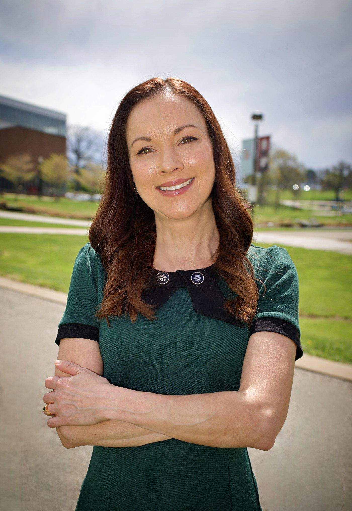

Anita Manion, PhD
Associate Professor of Political Science & Director of Undergraduate Studies at the University of Missouri–St. Louis. Her research agenda examines how election administration and education policy affect different communities and whether they work as intended — work she also brings to air as a political analyst for KSDK News.
About
Anita Manion studies how election administration and education policy affect different communities — and whether they work as intended.
Her research agenda centers on two domains she views as foundational to democracy and opportunity: election administration and education policy. Across both, she asks a consistent set of questions — how well a given policy works, how it affects different communities by gender, race, geography, and socioeconomic status, and what role government plays in shaping those outcomes.
She earned her PhD in Public Policy Analysis from Saint Louis University and has taught at the University of Missouri–St. Louis since 2015, where she now serves as Associate Professor and Director of Undergraduate Studies for the Political Science department and as an affiliate faculty member in Gender Studies.
Her research is deeply collaborative and community-engaged, building the empirical evidence on how well election and education systems function in practice — from vote center design and poll worker experience to teacher pay, four-day school weeks, and representation on local governing boards. This work has been funded by the Pew Charitable Trust, MIT Election Data and Science Lab, the Election Trust Initiative, United WE, and the Scholars Strategy Network, and published in outlets including Public Opinion Quarterly, Election Law Journal, and Politics, Groups, and Identities.
Since 2018, she has also served as a political analyst for KSDK News, the NBC affiliate in St. Louis, providing on-air and social analysis of local, national, and global politics, and has been interviewed by the Washington Post, NPR, Newsweek, Bloomberg News, and other national outlets.
Research & publications
Manion's scholarship runs along three connected tracks — how elections are administered, who is represented in local government, and what the public believes about policy and process.
Election administration & voting
Vote center design and adoption, poll worker experience, and public trust in election integrity — including the National Vote Center Database.
Representation, gender & race
Who sits on municipal boards and commissions, gender parity in local government, and racial dynamics in campaign contributions.
Education & public opinion
Teacher pay and retention, four-day school weeks, student debt forgiveness, and the self-interest driving policy preferences.
Selected journal articles
10 peer-reviewed articles · 2 under review- Ballots and Beliefs: Diverging Views on Election Integrity from the Public and Officials. With David C. Kimball, Paul Manson, Paul Gronke & Joseph Anthony. Politics and Governance, 2026. doi.org/10.17645/pag.11818
- Representation Matters: Assessing the Gender and Racial Divide in Missouri's Municipal Boards. With Jake Shaw, Sapna Varkey & David Kimball. Politics, Groups, and Identities, 2025. doi.org/10.1080/21565503.2025.2484248
- A Tale of Two Counties: A Study of Vote Centers in Fresno County and St. Louis County. With Lisa Bryant & David Kimball. Election Law Journal 23(3), 2024, 277–291. doi.org/10.1089/elj.2023.0035
- Your Typical Criminal: Why White Americans Hate Voter Fraud. With Adriano Anthony Udani & David C. Kimball. Public Opinion Quarterly 88(1), 2024, 757–780. doi.org/10.1093/poq/nfae023
- Vote at Any Polling Place: A Case Study of St. Louis County, Missouri. With David C. Kimball, Joseph Anthony, Adriano Udani & Ryan Pritchard. Election Law Journal 22(4), 2023, 287–305. doi.org/10.1089/elj.2022.0056
7 more journal articles
- The Information Landscape and Voters' Understanding of RCV in Alaska. With Joseph Anthony, David C. Kimball & Martha Kropf. Election Law Journal, 2025. doi.org/10.1177/15331296251366700
- The Policy Preferences of Marginal Voters: Complicating Political Polarization in Education Policy. With J. Cameron Anglum. American Politics Research, 2025. doi.org/10.1177/1532673X251367381
- Ballots and Booths: Best Practices for In-Person Voting. With Lisa Bryant, David Kimball, Gretchen Macht, Mindy Romero & Robert Stein. Journal of Election Administration, Research & Practice 3(1), 2025, 22–31. electioncenter.org/JEARP
- Increasing Minimum Teacher Salaries: Opportunities and Drawbacks Across Geography and Race. With J. Cameron Anglum & Sapna Varkey. Urban Affairs Review 60(6), 2024, 1931–1955. doi.org/10.1177/10780874241237412
- Our Selfish Side: Exploring Support for Student Debt Forgiveness Through the Lens of Self-Interest. Higher Education Policy 37(2), 2023, 738–760. doi.org/10.1057/s41307-023-00326-z
- Examining the Racial Turnout Gap in the Transition to Vote Centers. With Lisa Bryant, David Kimball & Jake Shaw. Political Research Quarterly — under review.
- The Face of Fraud: How Racial Depictions of Voter Fraud Influences Support for Election Policies. With Joseph Coll & David Kimball. Journal of Race, Ethnicity, and Politics — revise & resubmit, 2026.
Book chapters
4 chapters- Comparing Elite and Public Opinion on Election Administration and Reform. With David C. Kimball, Adriano Udani, Joseph Anthony & Paul Gronke. In Local Election Administrators in the United States, Palgrave Macmillan, 2024.
- Degree of Difficulty: Implementing Vote Centers During a Pandemic. With David Kimball, Joseph Anthony & Adriano Udani. In Pandemic at the Polls, Lexington Books, 2023.
- Political Identity and Beliefs about Stolen Elections in the American Electorate. With David C. Kimball & Adriano Anthony Udani. In The State of the Parties, 9th ed., Rowman & Littlefield, 2022.
- Failing and Succeeding: Analysis of the St. Louis Food Ecosystem. With Stephen Bagwell. In Food City Food for All, Serving Our Communities Foundation, 2025.
Public scholarship & policy reports
14 reports, briefs & op-eds- Vote Centers Go Mainstream: A National Look at Adoption. With David Kimball & Jake Shaw. electionline.org, July 2026. electionline.org
- Perceptions of Political Bias in U.S. Public Education. With J. Cameron Anglum. Brookings, June 2025. brookings.edu
- Women and People of Color are Underrepresented on Municipal Boards and Commissions. With Jake Shaw, Sapna Varkey & David Kimball. LSE US Politics and Policy Blog, June 2025. blogs.lse.ac.uk
- In-Person Voting: Best Practices and New Areas for Research. With Robert M. Stein, Lisa A. Bryant, David C. Kimball, Gretchen Macht & Mindy Romero. Commissioned white paper, MIT Election Data & Science Lab, 2023. electionlab.mit.edu
10 more reports & briefs
- Supplemental Teacher Pay in Missouri: Who, What, Where, and When. With J. Cameron Anglum. PRiME Center, October 2024. primecenter.org
- Teacher Retention and the Four-Day School Week in Missouri. With A. Camp, T. Wilson, Y. Liu, J. Anglum & T. Nguyen. PRiME Center, September 2024. primecenter.org
- Increasing Minimum Teacher Salaries. With J. Cameron Anglum & Sapna Varkey. Urban Affairs Review Blog, 2024. urbanaffairsreview.com
- In Search of Teachers and Data: Four-Day School Weeks and School Staffing Shortages. With J. Cameron Anglum & Sapna Varkey. PRiME Center, October 2023. primecenter.org
- Partisan Policy Preferences to Improve Teacher Recruitment and Retention. With J. Cameron Anglum & Sapna Varkey. Brookings, September 2023. brookings.edu
- Gender Parity on Civic Boards and Commissions in Missouri. With Jake Shaw, Sapna Varkey & David Kimball. Research report for United WE, August 2023. Read report
- Reforming Missouri's Minimum Teacher Salary. With J. Cameron Anglum, Sapna Varkey, Jennifer Gontram & Evan Rhinesmith. PRiME Center, May 2022. sluprime.org
- A Better Case for Boosting Teacher Compensation. Op-ed with J. Cameron Anglum, Jennifer Gontram, Sapna Varkey & Evan Rhinesmith. St. Louis Post-Dispatch, April 2022. stltoday.com
- Who are Local Election Officials, and What do They Say About Elections? With David C. Kimball, Adriano A. Udani, Joseph Anthony & Paul Gronke. MIT Election Data and Science Lab, February 2022. electionlab.mit.edu
- The Impact of Four-Day School Weeks on Teacher Recruitment in Missouri. With Sapna Varkey. Policy brief, PRiME Center, 2021. sluprime.org
Research datasets
5 released datasets- National Vote Center Database. With David C. Kimball & Jake Shaw, 2026. manion228.github.io/vote-centers
- Cooperative Election Study, 2024. With David C. Kimball & Adriano A. Udani. University of Missouri–St. Louis Content, 2025.
- Cooperative Election Study, 2022. With David C. Kimball & Adriano A. Udani. University of Missouri–St. Louis Content, 2023.
- Cooperative Election Study, 2021. With David C. Kimball & Adriano A. Udani. University of Missouri–St. Louis Content, 2022.
- Cooperative Congressional Election Study, 2020. With Joseph Anthony, David C. Kimball, Adriano A. Udani Jr. & Stephanie K. Van Stee. University of Missouri–St. Louis Content, 2021.
Working papers
2 in progress- Campaign Contributions in Mayoral Elections Vary by Race and Sex. With Jake Shaw, David Kimball & Sapna Varkey.
- Impacts of Merit-Based and Need-Based Aid on College Graduation in Missouri.
Media & public engagement
Manion translates her research on elections and politics for general audiences, on air, in print, and from the podium.
On air and on social media since 2018, providing objective, accessible analysis of local, national, and global political issues.
Reporters at outlets from the Washington Post to St. Louis Public Radio have turned to her for expertise on elections, representation, and voting policy.
Selected recent appearances
- Panelist, "Rethinking Election Day: How Vote Centers Are Changing the Landscape," The Elections Group & Center for Election Innovation and Research
- Panelist, "Recruitment and Retention: Understanding Poll Workers' Motivations & Beliefs," Books and Ballots series
- Guest analyst, the Frank & Jill Show, 550 KTRS — 10+ appearances discussing national and state politics
- Guest speaker, Ladue Chapel adult education series, "Unpacking the November Election"
- Guest analyst, St. Louis on the Air, St. Louis Public Radio — Missouri & Illinois elections
- Panelist, "Honest Elections Report," Show Me Integrity, Forward Through Ferguson, A Red Circle & Empower Missouri
- Public Policy Lunch guest speaker, Weidenbaum Center at Washington University — "The 2024 Election Results"
- Keynote speaker, United WE & Maxine Clark event on removing economic and civic barriers for women
Watch
Awards & honors
Teaching & service
Courses taught
- Introduction to American Politics
- Introduction to Public Policy
- The Politics of Poverty and Welfare
- Politics of Gender in the U.S.
- Organizational Behavior in Public and Nonprofit Organizations
- Vote 2020: Your Voice Matters
Selected service
- Political Science Academy Faculty Advisor, UMSL (2015–present)
- Gender Studies Curriculum Committee, UMSL (2019–present)
- Chair, Election Officials, Staffing, and Workload — Southern Political Science Association (2026)
- Planning committee, Election Sciences, Reform, and Administration Conference (2025)
- National Council Liaison & committee leadership, Graduate Women in Science (2023–2025)
- Referee: American Educational Research Journal, Election Law Journal, Political Research Quarterly, Politics & Gender, PS: Political Science & Politics, Public Opinion Quarterly, and others
- Member, Community Health Commission of Missouri's Policy and Advocacy Committee (2022–present)
- Volunteer, St. Louis Area Foodbank (2020–present) and United Way (2005–present)
Get in touch
For interviews, speaking engagements, media requests, or research collaboration, reach out directly.